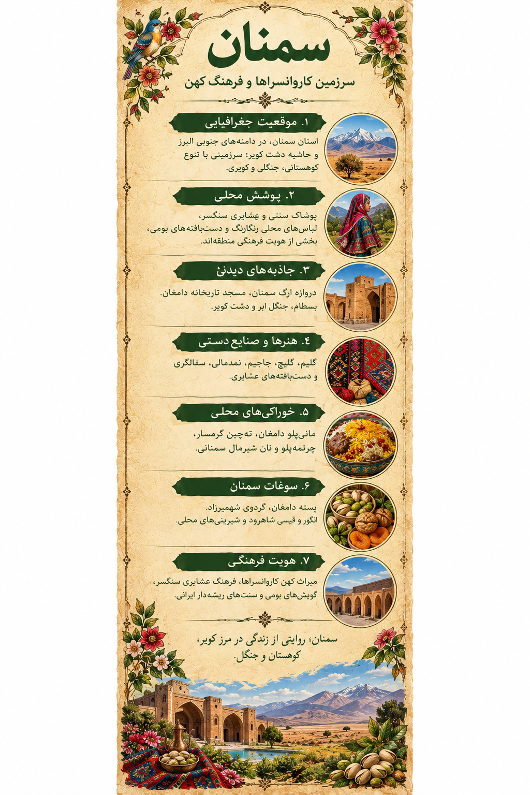

گالری حضوری و آنلاین | ایران، هزار رنگ
In-Person & Online Gallery | Iran, A Thousand Colors
سمنان؛ سرزمین کاروانسراها و فرهنگ کهن
Semnan: Land of Caravanserais and Ancient Culture
سمنان؛ روایتی از زندگی در مرز کویر، کوهستان و جنگل
Semnan: Life Between Desert, Mountains, and Forests
سفری تصویری میان پوشش زنان، فرهنگ عشایری، روستاها، بناهای تاریخی و طعمهای محلی استان سمنان
A visual journey through women's dress, nomadic culture, villages, historic landmarks, and local flavors of Semnan Province.
۱. اثر هنری | روایت یک سرزمین
1. The Artwork | A Region's Story
این اثر، برداشتی هنری از تنوع فرهنگی سمنان است؛ سرزمینی که در آن دشتهای کویری، کوهستان، جنگل، مسیرهای کاروانی و سنتهای بومی در کنار هم قرار میگیرند. رنگها و نقشهای تصویر، پنجرهای به خاطرههای فرهنگی و زندگی مردم این منطقه هستند.
This artwork offers an artistic interpretation of Semnan's cultural diversity, where desert plains, mountains, forests, caravan routes, and local traditions meet. Its colors and patterns open a window onto the region's cultural memory and everyday life.

اثر هنری سمنان از مجموعهٔ «ایران، هزار رنگ»
Semnan artwork from the “Iran, A Thousand Colors” collection
«از رنگهای کویر تا نقشهای پوشش بومی؛ هر گوشهٔ سمنان قصهای برای روایت دارد.»
“From the colors of the desert to the patterns of local dress, every corner of Semnan has a story to tell.”
این تصویر، بازخوانی هنری پوشش محلی است و نباید آن را بازسازی دقیق یک لباس واحد دانست.
This image is an artistic interpretation of local dress, not an exact reconstruction of one specific outfit.
۲. پوشش زنان | رنگ، نقش و هویت
2. Women's Dress | Color, Pattern, and Identity
پوشش زنان در استان سمنان با توجه به محل زندگی، شیوهٔ معیشت، سنتهای خانوادگی و دورهٔ تاریخی تفاوت داشته است. در میان گروههای بومی و عشایری منطقه، پوشاک و شیوهٔ آراستن سر و لباس میتواند نشانهای از هویت محلی باشد. یکی از نمونههای شناختهشده، پوشاک سنتی زنان سنگسری در محدودهٔ مهدیشهر است.
Women's dress in Semnan Province has varied according to place of residence, livelihood, family traditions, and historical period. Among the region's local and nomadic communities, clothing and head coverings can express local identity. One recognized example is the traditional dress of Sangsari women around Mahdishahr.

لیبل اختصاصی سمنان؛ راهنمای تصویری پوشش، جاذبهها و خوراک محلی
Semnan exhibition label: a visual guide to dress, landmarks, and local food
پوشش زنان سنگسریSangsari Women's Dress
پوشاک سنتی زنان سنگسری از اجزای گوناگونی تشکیل میشود. نامهایی مانند کژینشوی و مِکنِه در توصیف این پوشش دیده میشوند. شکل و جزئیات لباس ممکن است بر اساس کاربرد و سنت محلی تفاوت داشته باشد.
Traditional Sangsari women's dress includes several components. Names such as kejin-shoy and mekneh appear in descriptions of this clothing. Details can vary according to local customs and use.
پوشش سر و تزئیناتHead Coverings and Adornments
شالها، پوششهای سر و جزئیات تزئینی بخشی از شیوهٔ پوشش در جوامع مختلف منطقه بودهاند. برای نسبتدادن هر شکل یا رنگ به یک لباس مشخص، باید به مستندات همان جامعهٔ محلی رجوع کرد.
Scarves, head coverings, and decorative details have formed part of dress in different communities across the region. Specific garments and colors should be identified using documentation from the relevant local community.
لباس نمایشدادهشده در اثر هنری، الهامگرفته از پوشش عشایری سمنان است؛ نه ادعای بازسازی دقیق پوشاک سنگسری.
The outfit in the artwork is inspired by Semnan's nomadic dress; it is not presented as an exact reconstruction of Sangsari clothing.
۳. روستاها و زندگی محلی
3. Villages and Local Life
شهمیرزادShahmirzad
شهمیرزاد در دامنههای البرز به باغها، آبوهوای خنکتر و گردوی خود شناخته میشود و چهرهای متفاوت از بخشهای کویری استان دارد.
Set along the Alborz foothills, Shahmirzad is known for its orchards, cooler climate, and walnuts, offering a contrast to the province's desert areas.
مهدیشهر و سنگسرMahdishahr and Sangsar
این ناحیه با فرهنگ عشایری سنگسری، سنتهای دامداری و پوشاک بومی پیوند دارد. زندگی کوچنشینی در شکلگیری بخشی از میراث فرهنگی منطقه نقش داشته است.
This area is associated with Sangsari nomadic culture, pastoral traditions, and local dress. Nomadic life has shaped part of the region's cultural heritage.
قلعهبالاQaleh Bala
روستای قلعهبالا در نزدیکی منطقهٔ حفاظتشدهٔ توران قرار دارد و معماری روستایی و چشماندازهای پیرامون آن بخشی از جاذبههای شرق استان است.
Qaleh Bala lies near the Touran protected area. Its village architecture and surrounding landscapes are among the attractions of eastern Semnan.
شاهرود و پیرامون آنShahroud and Its Surroundings
در پیرامون شاهرود، چشماندازهای متنوعی از دشت و باغ تا نواحی کوهستانی و جنگلی دیده میشود. محصولات کشاورزی و زندگی روستایی نیز بخشی از هویت این ناحیهاند.
The surroundings of Shahroud range from plains and orchards to mountainous and forested areas. Agricultural products and rural life are also part of the area's identity.
۴. تاریخ و طبیعت | از کاروانسرا تا جنگل
4. History and Nature | From Caravanserais to Forests
دروازهٔ ارگ سمنانSemnan Arg Gate
دروازهٔ تاریخی ارگ از نشانههای معماری شهر سمنان است و با تزئینات و نمای شاخص خود، بخشی از خاطرهٔ شهری این منطقه را بازتاب میدهد.
The historic Arg Gate is one of Semnan city's architectural landmarks, reflecting part of the area's urban history through its distinctive facade and decoration.
مسجد تاریخانهٔ دامغانTarikhaneh Mosque, Damghan
مسجد تاریخانه از بناهای مهم و کهن ایران در دامغان است و در مطالعهٔ معماری دورهٔ آغازین اسلامی جایگاه ویژهای دارد.
Tarikhaneh Mosque in Damghan is one of Iran's important early Islamic monuments and holds a notable place in the study of early Islamic architecture.
مجموعهٔ تاریخی بسطامHistoric Bastam Complex
بسطام مجموعهای از بناهای تاریخی و مذهبی را در خود جای داده و از مراکز شناختهشدهٔ میراث فرهنگی در نزدیکی شاهرود است.
Bastam contains a group of historic and religious buildings and is a recognized heritage destination near Shahroud.
جنگل ابر و دشت کویرCloud Forest and Kavir Desert
تنوع طبیعی استان از نواحی کویری تا ارتفاعات و جنگلهای مهآلود گسترده است. جنگل ابر و چشماندازهای دشت کویر دو نمونه از این تضادهای طبیعیاند.
The province's landscapes range from desert areas to highlands and misty forests. The Cloud Forest and the Kavir Desert illustrate this natural diversity.
۵. خوراکیها و طعمهای محلی
5. Local Food and Flavors
مانیپلو دامغانDamghan Mani Polo
مانیپلو از غذاهای شناختهشدهٔ دامغان است و در معرفی خوراک محلی این شهر جایگاه ویژهای دارد.
Mani polo is a well-known dish associated with Damghan and is part of the city's local food traditions.
چرتمهپلوChertemeh Polo
چرتمهپلو از غذاهایی است که در معرفی آشپزی سنتی سمنان نام برده میشود و بخشی از تنوع خوراک منطقه را نشان میدهد.
Chertemeh polo is mentioned among traditional foods associated with Semnan and reflects the region's culinary variety.
نان شیرمال سمنانیSemnan Nan Shirmal
نان شیرمال از نانهای شیرین و محبوب منطقه است که در کنار دیگر نانها و شیرینیهای محلی، بخشی از خوراک سنتی سمنان را تشکیل میدهد.
Nan shirmal is a popular sweet bread that, alongside other local breads and pastries, forms part of Semnan's food heritage.
نان کاک و نان چایNan Kak and Nan Chai
نان کاک، نان چای و دیگر شیرینیهای محلی در کنار چای، بخشی از پذیرایی و خاطرههای خوراکی مردم منطقهاند.
Nan kak, nan chai, and other local sweets served with tea are part of the region's hospitality and food memories.
۶. محصولات بومی و صنایعدستی
6. Local Products and Handicrafts
پستهٔ دامغانDamghan Pistachios
پسته از محصولات شناختهشدهٔ دامغان است و در اقتصاد کشاورزی و هویت خوراکی این شهر جایگاه مهمی دارد.
Pistachios are a well-known agricultural product of Damghan and an important part of its local food identity.
گردوی شهمیرزادShahmirzad Walnuts
باغهای گردوی شهمیرزاد از ویژگیهای شناختهشدهٔ این ناحیهاند و محصول آن در میان سوغات محلی استان قرار میگیرد.
Shahmirzad's walnut orchards are a notable feature of the area, and its walnuts are among the province's local products.
گلیچبافی و دستبافتههاGlich Weaving and Textiles
گلیچبافی و دیگر دستبافتههای بومی، از هنرهایی هستند که مهارت و سلیقهٔ بافندگان محلی را در نقش و بافت پارچه نشان میدهند.
Glich weaving and other local textiles express the skills and artistic choices of regional weavers through pattern and texture.
نان، شیرینی و محصولات روستاییBreads, Sweets, and Rural Products
نانها و شیرینیهای محلی، محصولات باغی و فرآوردههای دامداری، بخشی از تولیدات بومی و سوغات مناطق مختلف استاناند.
Local breads and sweets, orchard products, and dairy goods are among the regional products and souvenirs of the province.
۷. منابع و مطالعهٔ بیشتر
7. Sources and Further Reading
برای مطالعهٔ دقیقتر دربارهٔ تاریخ، میراث فرهنگی، پوشش بومی و جاذبههای استان، میتوان از منابع گردشگری و فرهنگی زیر شروع کرد.
For further information about the province's history, cultural heritage, local dress, and attractions, begin with the following tourism and cultural resources.
اطلاعات این صفحه معرفی عمومی منطقه است؛ جزئیات پوشاک محلی باید با منابع تخصصی و مستندات جوامع بومی تطبیق داده شوند.
This page provides a general regional introduction. Details of local dress should be checked against specialist sources and documentation from local communities.
بازگشت به گالری مناطق ایران ←
← Back to the Regions Gallery